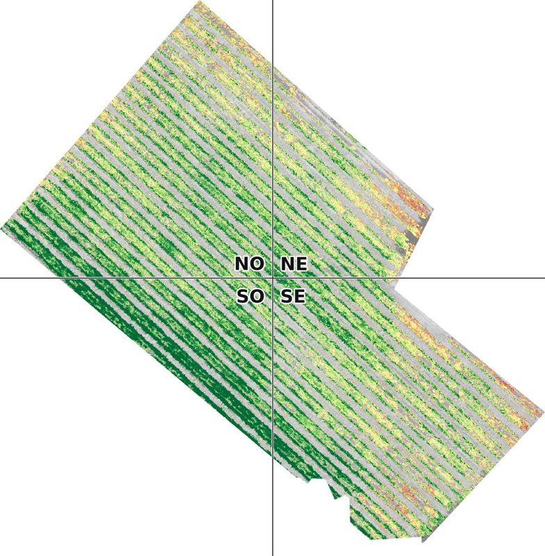

Actualités et veille
Ce qui bouge dans la vigne,
vu du ciel.
Nos vols, nos résultats, et notre veille sur le drone agricole, l'imagerie multispectrale, la réglementation et la santé de la vigne. Un article par mois.
 Réglementation · 24 octobre 2026Flavescence dorée : ce que change le projet d'arrêté 2027Le ministère de l'Agriculture a soumis à consultation un nouvel arrêté national. Ce qui reste, ce qui change, et pourquoi la précision des cartes va compter.Lire
Réglementation · 24 octobre 2026Flavescence dorée : ce que change le projet d'arrêté 2027Le ministère de l'Agriculture a soumis à consultation un nouvel arrêté national. Ce qui reste, ce qui change, et pourquoi la précision des cartes va compter.Lire
 Veille · 17 octobre 2026Épandage par drone : où en est la France ?Des millions d'hectares traités par drone en Chine, une porte qui s'entrouvre à peine en France. État des lieux, chiffres et cadre réglementaire.Lire
Veille · 17 octobre 2026Épandage par drone : où en est la France ?Des millions d'hectares traités par drone en Chine, une porte qui s'entrouvre à peine en France. État des lieux, chiffres et cadre réglementaire.Lire

Technologie · 10 octobre 2026Comment un drone voit une vigne maladeLumière invisible, red-edge, NDVI, NDRE : ce que mesure une caméra multispectrale, expliqué simplement, avec nos images de la saison 2026.Lire